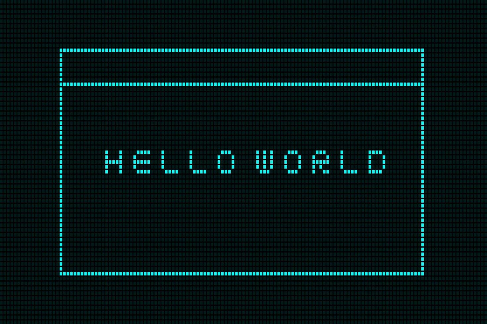

Hierarquia de Títulos
Título 1
Título 2
Título 3
Título 4
Título 5
Título 6
Hitória do Video Game
Playstation
Play 1
Play 2
Xbox
Xbox 360
Xbox One
Paragráfos e Quebras
O "Olá Mundo" ou "Alô Mundo" é um famoso programa de computador que imprime "Olá, Mundo!"
(ou "Hello, World!"), usualmente seguido de uma quebra de linha, com algumas variações como inexistência do ponto de exclamação e letras em minúscula, no dispositivo de saída.
Símbolos Especiais e Emojis
<
>
≤
≥
£
¥
€
¢
©
®
™
δ
Δ
∑
∞
Muitos ∑ Símbolos....
(T_T)
🌻
😀
Formação de textos
Este texto está em negrito.
Texto Em ênfase.
italico
Ênfase,parece o italico
Negrito e Italico
Marca Texto
outra cor
sublinhado
sublinhado
H2O
x 2
Links
Olá Mundo

Internet - externo
Listas